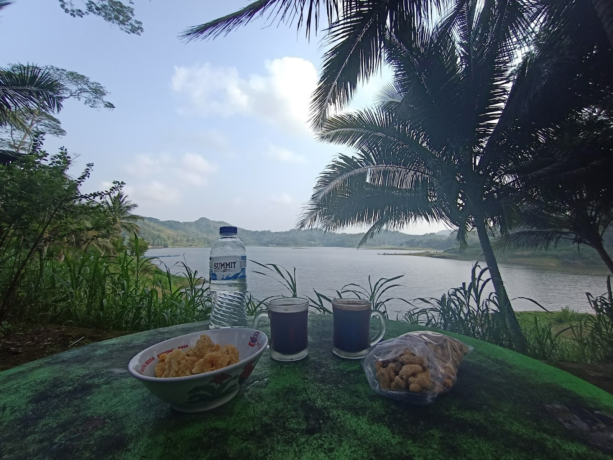
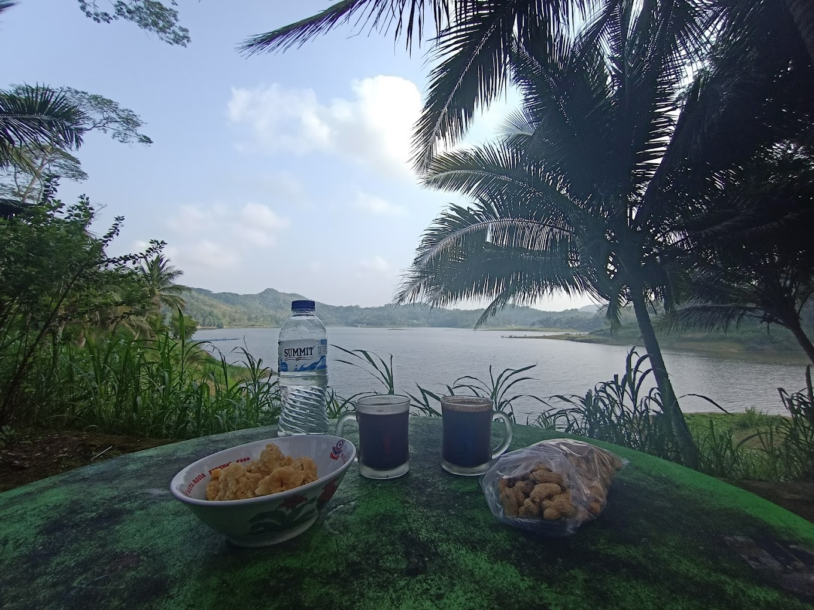

Waduk Sermo di Jogja adalah sebuah waduk buatan yang menjadi objek wisata yang populer di daerah tersebut. Terletak di Desa Hargowilis, Kecamatan Kokap, waduk ini memiliki luas yang cukup besar dan dikelilingi oleh perbukitan hijau yang indah.


 

Tempatnya bersih, pemandangan bagus dan fasilitas komplit (buat yang gak suka ribet, bisa sewa tenda dan perlengkapannya disana sekalian ya gaes). Di pagi hari ada kapal-kapal yang bisa dinaiki dengan htm 10ribu per orang untuk berkeliling di waduk sermo. Seruu untuk acara camping bareng teman-teman atau keluarga
Bagus buangeeeeet Apalagi buat liat sunrise Mau kemah ataupun nggak sama2 menyenangkan Berangkat dari sleman jam 4 pagi, sampai disana pas banget masih bisa lihat sunrise Buat akses jalan menggunakan mobil masih aman, kalau bingung bisa banget nanya warlok dan pada ramah²🥰 Sekali-kali melepas penat worth it banget kesini, akses parkir baik, harga karcis parkir masuk akal, toilet memadai, ada bbrp penjual makanan (gorengan, popmie). Oh ya, jangan buang sampah sembarangan ya!
Salah satu wisata alam murah namun tidak murahan di Jogja yaitu Waduk Sermo. Karena untuk menikmati keindahan dan pesona dari Waduk Sermo sendiri anda cukup membayar tiket masuk wisata dengan harga Rp.6.000/orang. Bagi wisatawan yang ingin melakukan camping akan dikenakan biaya sebesar Rp.15.000/orang. Hamparan telaga yang luas dengan panorama perbukitan hijau pastinya rekomended untuk kunjungan berlibur di Yogyakarta. Selain keindahan, Waduk sermo juga akan memanjakan liburan anda dan keluarga dengan berbagai macam spot wisata rekomended.